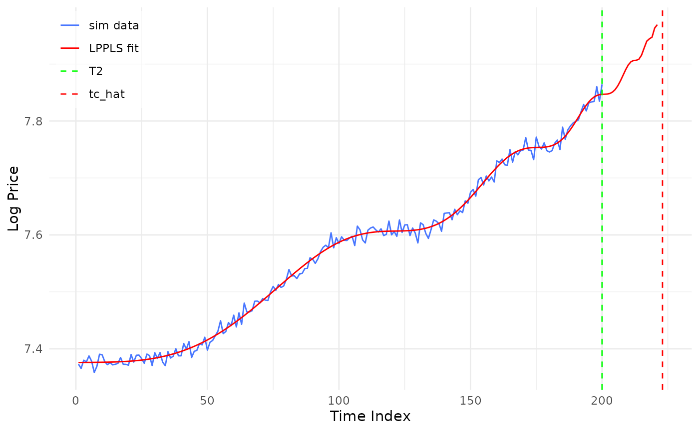
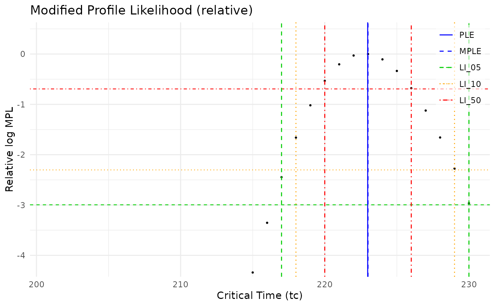

Fits the Log-Periodic Power Law Singularity (LPPLS) model to log-price data using the calibration methods from Filimonov & Sornette (2013). Supports multiple optimization modes and provides diagnostic outputs.
Usage
fit_lppls(
log_price,
fh = 30,
hold_out = 0,
lower = c(0.1, 6, -1e+14, 0.8),
upper = c(0.9, 13, -1e-14, 1e+06),
tc_init = 1000,
m_init = 0.5,
o_init = 13,
num_searches = 20,
mode = "F2",
mpl_plot = FALSE,
mpl_cutoff = c(0.05, 0.1, 0.5),
fp = FALSE,
cp = FALSE,
sp = FALSE,
tp = c(0, 0, 0),
tp_id = 1,
pp = FALSE,
mp = FALSE,
factr = 1e+07,
fb = FALSE,
beta_method = c("crossprod", "qr", "chol", "symengine"),
dates = NULL,
style = c("simulated", "empirical"),
data_label = NULL
)Arguments
- log_price
Numeric vector of log-prices.
- fh
Integer, forecast horizon length in time units (default 30). The search for
tcextends fromT2+1toT2+fhwherefh>1.- hold_out
Integer, number of observations to hold out from the end of the sample for validation (default 0). That is, the number of data points after
T2.- lower
Numeric vector of length 4, lower bounds for
c(m, omega, B, D). Default:c(0.1, 6, -1e14, 0.8).
The defaults oflowerandupperfollow the constraints of Filimonov, Demos & Sornette (2017): \(B < 0\), \(D \geq 0.8\), \(0.1 \leq m \leq 0.9\) and \(6 \leq \omega \leq 13\), which they give as approximate. The damping bound relaxes the theoretical \(D > 1\), which keeps the crash hazard rate non-negative (Graf v. Bothmer & Meister, 2003), because a real crash unfolds over weeks rather than in one immediate jump.
NOTE: Fortrace_plotmode 2 and 3 (bmandbo), lower forBshould be set to the desired minimum value of the B-axis in the contour plotting.
Example:lower = c(0.1, 6, -0.03, 0.8)If the optimization algorithm goes below the lower limits at any point the lower limit for the B-axis will be extended automatically.
- upper
Numeric vector of length 4, upper bounds for
c(m, omega, B, D). Default:c(0.9, 13, -1e-14, 1e6).- tc_init
Numeric, initial value of critical time
tcfor optim() (default 1000).tc_initshould be in \([T_2+1, T_3]\), where \(T_3 = T_2 + s\), and \(s\) is the forecast horizon.- m_init
Numeric, initial value of power law exponent
mfor optim() (default 0.5).m_initshould be in [lower[1],upper[1]]. The algorithm will search for initial values ofmandomegathat giveB<0. If such values are found, the given init values will be overwritten.- o_init
Numeric, initial value of frequency
omegaforoptim()(default 13).o_initshould be in [lower[2],upper[2]]. Default is 13, which increases the probability ofB<0(of course not for random initial values). The algorithm will search for initial values ofmandomegathat giveB<0. If such values are found, the given init values will be overwritten.- num_searches
Integer, number of times to repeat the optimization wrt
tc,mandomega. First iteration uses given initial values. Any subsequent iterations use random initial values. In modes"F2"and"MPL"these are seeded internally, so the result does not depend on the state of the random number generator, and the caller's random number stream is left as it was. In mode"F1"they are drawn from the caller's stream.- mode
Character, optimization mode:
- F1
Optimize wrt
tc,m,omegasimultaneously- F2
Optimize wrt
m,omegafirst (for eachtc), then optimize wrttc- MPL
Modified Profile Likelihood with likelihood intervals
- mpl_plot
Logical, whether to generate MPL plot (default
FALSE).- mpl_cutoff
Numeric vector of length 3, cutoff levels (\(c\)) for likelihood interval (default
c(0.05, 0.1, 0.5)). See Filimonov2017 equation (39). \(c = 0.05\) indicates that values of tc outside the likelihood interval have a probability of 0.05.- fp
Logical, whether to generate fit plot (default
FALSE).- cp
Logical, whether to generate contour plot (default
FALSE).tcvalue is fixed to the estimate with the lowest objective function value.- sp
Logical, whether to generate surface plot (default
FALSE).tcvalue is fixed to the estimate with the lowest objective function value.- tp
Numeric vector of length 3, 0/1 selectors for trace plots. Plot 1:
m-omega, plot 2:B-m, plot 3:B-omega(defaultc(0, 0, 0)).
Example:c(1, 0, 1)selects trace plot 1 and 3. Traces convergence of parameters during optimization of F2 objective function. Only works whenmode = "F2". The plotted trace path is the one for the value oftcthat produced the smallest value ofSSE2.
NOTE: Contour plots in trace plot 2 and 3 only apply to the first step in the trace. In a trace plot wrtBandm,omegais not fixed (and vice versa formandomega).- tp_id
Integer, which trace step to use for contour plot (default 1). If the indicated id is too high, 1 will be chosen.
- pp
Logical, whether to generate parameter plot (default
FALSE).- mp
Logical, whether to generate matrix plot (default
FALSE). x-axis istc, y-axis isSSE. 3 columns of plots for smallest and biggest value ofm, and value between the two. 3 columns of plots for smallest and biggest value ofomega, and value between the two.- factr
Numeric, convergence tolerance for the L-BFGS-B
controllist (default1e7, which is alsostats::optim()'s own default). It is a multiplier on machine epsilon, not an absolute tolerance: the optimiser stops when the relative reduction in the objective falls belowfactr * .Machine$double.eps, so1e7asks for roughly1e-9.Smaller is not automatically better. Any value below about
1e0requests a tolerance finer than double precision can represent, which cannot be satisfied: L-BFGS-B then runs until its line search fails and returns convergence code 52 rather than converging. Earlier versions of this package defaulted to1e-08, which requests2.2e-24and had exactly that effect – about five times more objective evaluations than1e7, ending in line-search failure for two thirds of the candidatetcvalues, and reaching the same optimum. Seemisc/bench_beta.Rmdfor the measurements.- fb
Logical, whether to print feedback during execution (default
FALSE).- beta_method
Character, how to solve for the linear parameters \(A, B, C_1, C_2\) given \((t_c, m, \omega)\).
At fixed \((t_c, m, \omega)\) the model is linear in those four coefficients, so with \(\tau = t_c - t\) it is \(y = X\beta\) for the \(n \times 4\) design matrix $$X = [\,1,\; \tau^{m},\; \tau^{m}\cos(\omega \log \tau),\; \tau^{m}\sin(\omega \log \tau)\,],\qquad \beta = (A, B, C_1, C_2)'$$ whose columns are linearly independent for \(m \ne 0\), \(\omega \ne 0\). Every method returns the same \(\hat\beta = \arg\min_\beta \|y - X\beta\|^2\) and differs only in how it is computed. The solver runs once per objective evaluation, so it dominates the cost of a calibration.
"crossprod"(default) Normal equations, \((X'X)\hat\beta = X'y\), via
crossprod()andsolve(). Fastest: \(X\) is built once and the residuals are formed as \(y - X\hat\beta\), so the series is walked a single time. Exact to well within anything interpretable over the admissible \(0.1 \le m \le 0.9\)."qr"Householder QR of \(X\) via
.lm.fit(), which yields the residuals as part of the factorisation, so the fitted values are never reconstructed. Never forms \(X'X\), and since \(\kappa_2(X'X) = \kappa_2(X)^2\) it does not square the condition number. About 30% slower and markedly more accurate; prefer it iflower[1]is widened toward \(m \to 0\), where \(\tau^{m} \to 1\) rotates into the intercept column and \(X\) approaches rank deficiency."chol"Cholesky factorisation of \(X'X\), which is symmetric positive definite whenever \(X\) has full column rank.
"symengine"The thesis implementation: the \(4 \times 4\) system is solved symbolically once and compiled to one closure per coefficient, fed by hand-computed entries of \(X'X\) and \(X'y\). Retained so the thesis calibration can be reproduced and inspected directly – it is roughly ten times slower than the default and the least accurate of the four.
The methods are not bit-identical to one another. The three numerical solvers evaluate the objective in a single pass over the series, which is also not bit-identical to a two-pass evaluation of the same solve: forming the fitted values as \(X\hat\beta\) sums the four terms in a different order than re-evaluating \(A + \tau^{m}(B + C_1\cos(\omega\log\tau) + C_2\sin(\omega\log\tau))\) from the closed form. The differences are at the level of the last few significant digits and do not move any reported quantity, but they mean a calibration is bit-reproducible only against the same
beta_method.See
misc/bench_beta.Rmdfor the timings and precision measurements behind these characterisations.- dates
NULL(default) or aDatevector the same length aslog_price, strictly increasing, labelling the 1..n time index with calendar dates. Purely presentational: the calibration is index-based and its results do not depend ondates. When supplied, the attached fit plot is drawn on a calendar axis, andprint()andsummary()report \(\hat{t}_c\), the MPLE and every likelihood interval as dates as well as indices. A forecast critical time beyond the end of the series is extrapolated at the series' median spacing and flagged with*.- style
One of
"simulated"(default) or"empirical", passed tofit_plot()for the attached fit plot."empirical"draws an observed series in grey and splits the fitted curve atT2, so the forecast beyond the calibration window is marked in red. Seefit_plot().- data_label
NULL(default) or a string naming the observed series in the attached fit plot's legend. The default followsstyle.
Value
A list containing:
- fit
List with fitted model results. In F1/F2 mode:
- mode = "F1"
List of fits with random initial values.
fit[[1]]list of best fit coefficients optimized wrt
mandomega.fit[[2]]Tibble of fits with random starting parameters.
Sorted by objective function value (best at top).
Output format:[ list(tc, m, omega, A, B, C1, C2, D, value_min, ID), list(tc, m, omega, A, B, C1, C2, D, value, ID), ..., list(tc, m, omega, A, B, C1, C2, D, value_max, ID) ]fit[[3]]If no fits passed the filter: Only unfiltered fits returned.
IDis an identifier indicating the order pre-sorting. These are the indexes reported in "out of range" warnings.- mode = "F2"
List with two or three elements:
fit[[1]]List of best fit coefficients optimized wrt
mandomega.fit[[2]]If at least one fit passed the filter: Tibble of best fits for objective function
F2for each value oftc. Columns are:c(ID, value, tc, m, omega, A, B, C1, C2, damp). Sorted by objective function value (best at top). For each value oftcthe best fit is picked from thattc's table infit[[4]].
If no fits passed the filter: Only unfiltered fits returned.fit[[3]]If at least one fit passed the filter: Unfiltered fits returned.
If no fits passed the filter: Nothing is returned infit[[3]]fit[[4]]List of all tmp fits
For eachtcvalue, there is a tibble with all fits using random starting points.
- mpl_output
(MPL mode only) List with likelihood intervals, R values, log-likelihoods
mpl = list(LI, R, LL, MLL)- LI
vector of 3 elements, one for each value of
mpl_cutoff.- R
number, relative likelihood
- LL
vector of MPL log-likelihoods for each
tcvalue- MLL
maximum of
LL- tc_hat_mpl
tcfor whichLLtakes it's maximum
- mpl_plot
(if requested) ggplot2 object for Modified Profile Likelihood plot with likelihood intervals
- fit_plot
(if requested) ggplot2 object for fit plot
- contour_data
(if requested) List with
x,yandzdata for contour plot of SSE wrtmandomega.- contour_plot
(if requested) plotly object for contour plot
- surface_plot
(if requested) plotly object for surface plot
- trace_plot_mo
(if requested) ggplot2 object containing trace plot for
mandomega- trace_plot_bm
(if requested) ggplot2 object containing trace plot for
Bandm- trace_plot_bo
(if requested) ggplot2 object for containing trace plot for
Bandomega- param_plot
(if requested) ggplot2 object for parameter plot
- matrix_plot
(if requested) ggplot2 object for matrix plot
- out_of_range_tracker
List tracking which fits had out-of-range
Bor damping values- F1 mode
List of random iteration IDs what resulted in out-of-range parameters
- F2 mode
List of random tc value IDs and iteration IDs what resulted in out-of-range parameters.
tcvalue ID start with 1 forT2+1. That is, the first time step after the modelling period, or the first time step of the forecasting horizon.
- log_price
The input series, so diagnostics that need the data do not make the caller supply it again. The calibration slice is
log_price[seq_len(fit_args$n)].- fit_args
List recording the settings this calibration ran with –
mode,n(calibration length),fh,hold_out,lower,upper,num_searchesandmpl_cutoff. Diagnostics need these: whetherm = 0.9is a boundary solution or an interior optimum cannot be told from the estimate alone.
The list has class "lppls_fit". A calibration can look convincing as a
plot and still not be worth interpreting, so the object carries its own
diagnostics:
print.lppls_fit()Printing the fit reports the estimate together with the checks that decide whether to trust it – bounds, optimisation basins, search filters and the extent of the modified profile likelihood. Warnings are listed only when something is wrong.
summary.lppls_fit()The same as values rather than text, plus the curvature check and whether each likelihood interval is closed by the likelihood or by the edge of the
tcgrid.plot.lppls_fit()Any plot attached at fit time, or the basin views, drawn on demand.
lppls_curvature()Whether the estimate sits at a genuine interior minimum, which is what the modified profile likelihood assumes.
Details
The LPPLS model is: $$y(t) = A + (t_c - t)^m [B + C_1 \cos(\omega \log(t_c - t)) + C_2 \sin(\omega \log(t_c - t))]$$
The model has 7 parameters: \(A\), \(B\), \(C_1\), \(C_2\) (linear) and \(t_c\), \(m\), \(\omega\) (nonlinear). The Filimonov calibration exploits this structure by solving for the linear parameters analytically given the nonlinear ones.
Mode F1: Optimizes all nonlinear parameters c(tc, m, omega)
simultaneously using L-BFGS-B with multiple random starting points.
Mode F2: A two-stage procedure:
For each candidate
tcvalue, optimizec(m, omega)Select the
tcthat minimizes the overall SSE
This is more robust than F1 for ill-conditioned problems.
Mode MPL: Modified Profile Likelihood inference from Filimonov et al. (2017).
Provides likelihood-based confidence intervals for tc.
Profiling mode = "MPL" on macOS
Running a sampling profiler over an MPL calibration can crash the R
session ("Illegal instruction: 4") on macOS builds that use Apple's
Accelerate framework as their BLAS – which is the default for the CRAN macOS
build of R. This affects utils::Rprof() and everything layered on it
(profvis, the RStudio profiler, proftools).
The fault is an interaction between R's profiler and Accelerate's DGEMM,
not a fault in this package: it reproduces in plain R with no packages
loaded, via Rprof(tempfile()); for (i in 1:2e5) crossprod(A, B) for
matrices A, B of a few hundred rows or more. MPL mode is the only part of
lpplsF that reaches it, because the modified profile likelihood is the only
place that multiplies two matrices; every other product here is a
one-argument crossprod(), a matrix-vector product or a decomposition, none
of which are affected. Fitting itself is unaffected – the crash requires a
profiler to be running.
To profile MPL mode, take R's own matrix products instead of the BLAS for the duration of the profiling session:
old <- options(matprod = "internal")
Rprof("prof.out")
fit <- fit_lppls(log_price, mode = "MPL", ...)
Rprof(NULL)
options(old)
summaryRprof("prof.out")matprod = "internal" costs only a few percent on a whole MPL fit, since the
fit does relatively few matrix-matrix products. It does sum in a different
order, so estimates move in the last couple of digits; that is immaterial for
a profiling run but is a reason not to set it globally.
References
Filimonov, V., & Sornette, D. (2013). A stable and robust calibration scheme of the log-periodic power law model. Physica A, 392(17), 3698-3707.
Filimonov, V., Demos, G., & Sornette, D. (2017). Modified profile likelihood inference and interval forecast of the burst of financial bubbles. Quantitative Finance, 17(8), 1167-1186.
Graf v. Bothmer, H.-C., & Meister, C. (2003). Predicting critical crashes? A new restriction for the free variables. Physica A, 320, 539-547. doi:10.1016/S0378-4371(02)01535-2
See also
print.lppls_fit(), summary.lppls_fit(), plot.lppls_fit() and
lppls_curvature() for diagnosing the returned fit; lppls_rolling() to
recalibrate over a rolling window.
Examples
## A simulated bubble: 200 observations of an LPPLS path whose critical time
## is t = 221, plus a little noise
set.seed(4)
t <- 1:200
log_p <- eval_lppls(t, A = 8, B = -0.025, C1 = 0.0015, C2 = 0.001,
tc = 221, m = 0.6, omega = 8) + rnorm(200, sd = 0.01)
## Calibrate by modified profile likelihood, scanning tc over t = 201..230
fit <- fit_lppls(log_p, fh = 30, mode = "MPL",
m_init = 0.5, o_init = 8, num_searches = 2, fp = TRUE)
fit # the estimate, and the diagnostics that qualify it
#> LPPLS calibration (mode = MPL)
#> Window: n = 200 fh = 30 hold_out = 0 num_searches = 2
#> Estimate: tc = 222.98 m = 0.5937 omega = 8.2586 D = 1.034
#> SSE = 0.0178573
#> Bounds: estimate interior; fits at a bound: m 0/30, omega 0/30
#> Basins: SSE 0.0178574..0.0223081;
#> no distinct inferior cluster (largest gap 0.11 of the spread)
#> Filters: B out of range 0 D out of range 0
#> MPL: defined at 30/30 tc MPLE = 223
#> LI(0.05) [217, 230] LI(0.10) [218, 229] LI(0.50) [220, 226]
plot(fit, "fit") # attached at fit time by fp = TRUE

plot(fit, "mpl_relative") # drawn on demand
